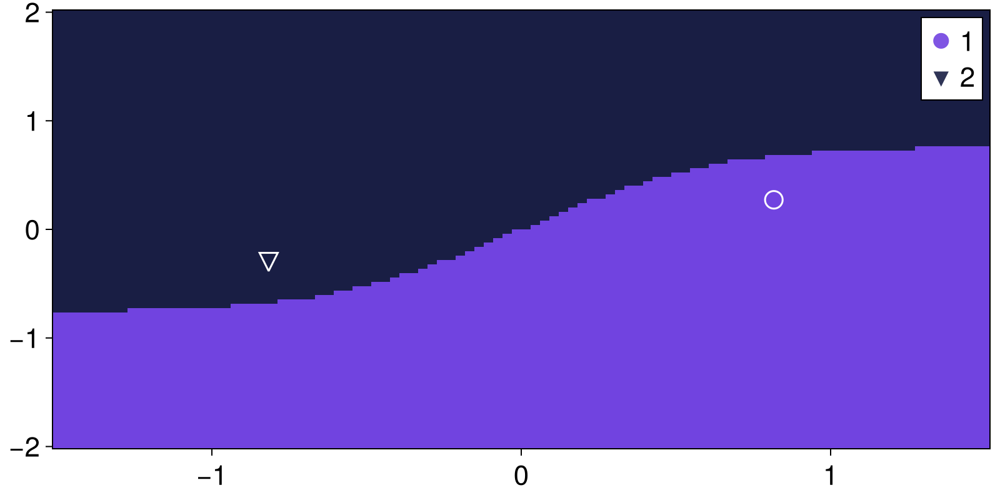
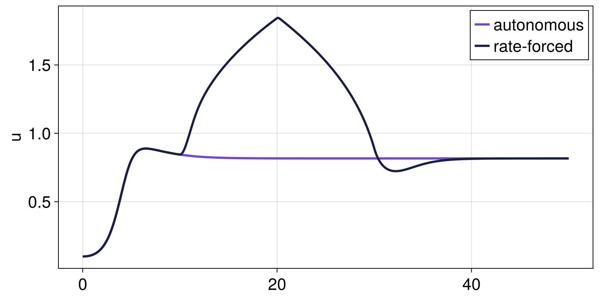
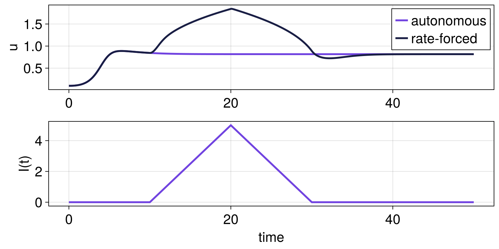
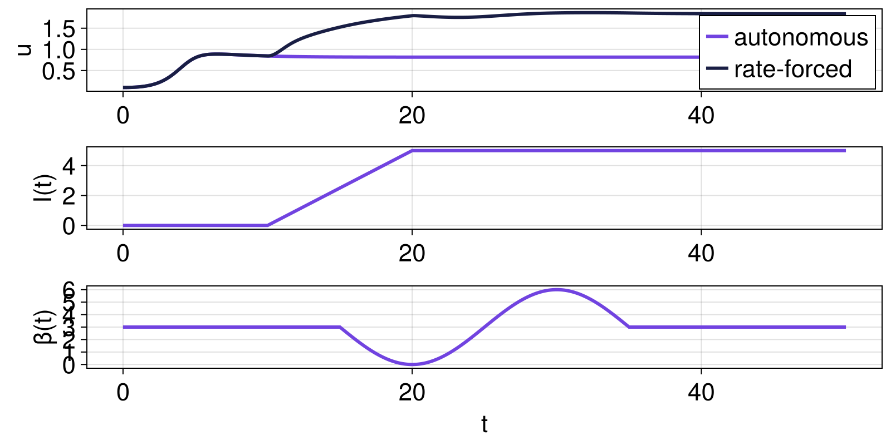
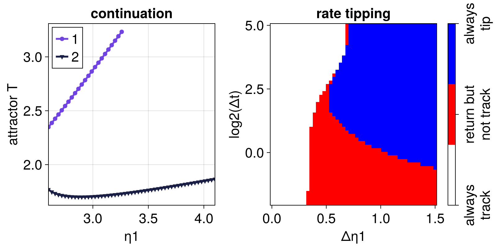
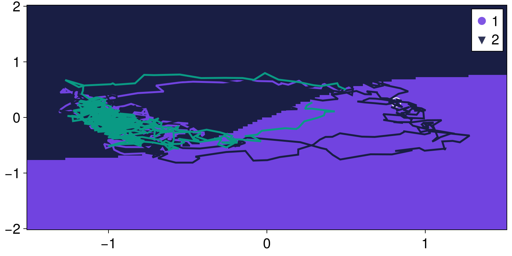
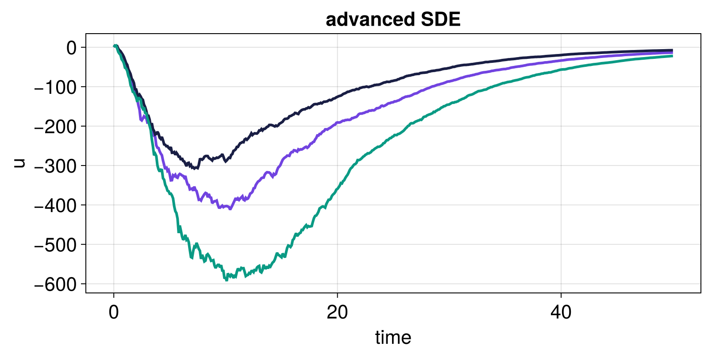
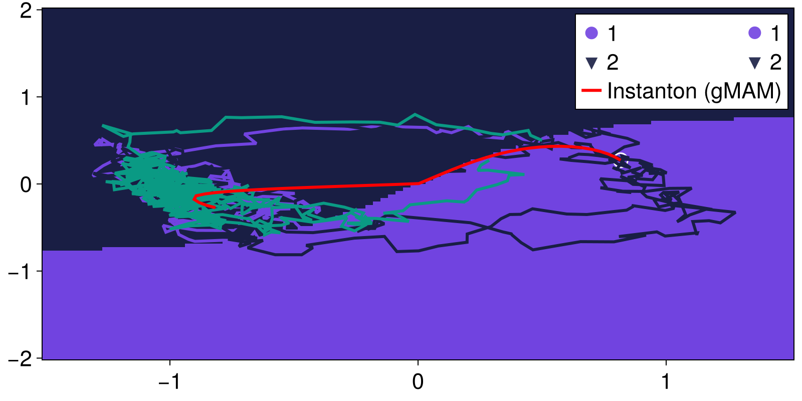

CriticalTransitions.jl Tutorial
CriticalTransitions.jl is an advanced software for the analysis of critical transitions in dynamical systems. Due to its advanced nature it is recommended that you have basic familiarity with the DynamicalSystems.jl and Attractors.jl packages, by going through their main tutorials. Attractors.jl knowledge is not strictly required, but interplays with various functionalities used in the package, such as displaying basins of attraction, or using the output of global continuation to define additional rate tipping functionality.
The general workflow of CriticalTransitions.jl consists of two steps, similar to DynamicalSystems.jl:
- Define your specific nonautonomous dynamical system type.
- Investigate the system by calling existing functions on it (see API, this tutorial, and the Examples entries).
Nonautonomous systems
CriticalTransitions.jl focuses on two classes of nonautonomous systems:
RateSystem, which is a deterministicDynamicalSystemwhose parameters change as functions of time in a predetermined way.RandomSystem, which is a stochasticDynamicalSystemwhich is driven by some sorts of noise input. Currently the only such systems supported are stochastic differential equations.
To create either, one often starts with an autonomous deterministic system, which is created following the standard DynamicalSystems.jl approach. For the scope of this tutorial, this will be the FitzHugh-Nagumo model:
\[\begin{aligned} \frac{du}{dt} &= \frac{1}{\epsilon} \left( -\alpha u^3 + \gamma u - \kappa v + I \right) \\ \frac{dv}{dt} &= -\beta v + u \ , \end{aligned}\]
which we will create now as a basic DynamicalSystem with named parameters
using CriticalTransitions # re-exports `DynamicalSystemsBase`
function fitzhugh_nagumo(u, p, t)
x, y = u
(; ε, β, I) = p
dx = x - x^3 - y + I
dy = (x - β * y) * ε
return SVector(dx, dy)
end
mutable struct FitzhughNagumoParameters
ε::Float64; β::Float64; I::Float64
end
p = FitzhughNagumoParameters(0.1, 3.0, 0.0)
u0 = [0.1, 0.1]
ds = CoupledODEs(fitzhugh_nagumo, u0, p)2-dimensional CoupledODEs
deterministic: true
discrete time: false
in-place: false
dynamic rule: fitzhugh_nagumo
ODE solver: Tsit5
ODE kwargs: (abstol = 1.0e-6, reltol = 1.0e-6)
parameters: Main.FitzhughNagumoParameters(0.1, 3.0, 0.0)
time: 0.0
state: [0.1, 0.1]
to put the rest of the analysis into context, let's quickly visualize the basins of attraction
using Attractors # also re-exported by `CriticalTransitions`
using CairoMakie # for plotting
grid = (range(-1.5, 1.5; length = 100), range(-2, 2; length = 100))
mapper = AttractorsViaRecurrences(ds, grid)
boa = basins_of_attraction(mapper, grid)
figboa = heatmap_basins_attractors(boa)
RateSystem: creation
Transforming a deterministic DynamicalSystem to a RateSystem is straightforward. All we have to do is define a forcing profile that dictates how the parameter(s) may change with time. The simplest case is a linear ramp, captured by:
fp = ForcingProfile(:linear)ForcingProfile{CriticalTransitions.var"#111#113", Float64}(CriticalTransitions.var"#111#113"(), (0.0, 1.0))The forcing profile by itself doesn't say when the forcing starts or ends, or which parameter will change and by how much. It only captures the form of the time variability. The remaining information is encoded when creating the RateSystem:
pidx = :I # which parameter changes
rs = RateSystem(
ds, fp, pidx;
forcing_start_time = 10,
forcing_duration = 10,
forcing_scale = 5,
)2-dimensional RateSystem
deterministic: true
discrete time: false
in-place: false
dynamic rule: RateSystemSpecs
parameters: Main.FitzhughNagumoParameters(0.1, 3.0, 0.0)
time: 0.0
state: [-0.8173626360929602, -0.27171163287008826]
In the above example the current I will linearly ramp from 0 to 5 in the time window 10 to 20. Being explicit, this is what's going on, given time t:
t < forcing_start_time: the system is autonomous, with parameters given by the underlying autonomous system.forcing_start_time < t < forcing_start_time + forcing_duration: the system is non-autonomous with the parameter change given by theForcingProfile, scaled in magnitude byforcing_scale.t > forcing_start_time + forcing_duration: the system is again autonomous, with parameters fixed at their values attained at the end of the forcing interval.
now if we choose the reverse option,
rs = RateSystem(
ds, fp, pidx;
forcing_start_time = 10,
forcing_duration = 10,
forcing_scale = 5,
reverse = true,
)2-dimensional RateSystem
deterministic: true
discrete time: false
in-place: false
dynamic rule: RateSystemSpecs
parameters: Main.FitzhughNagumoParameters(0.1, 3.0, 0.0)
time: 0.0
state: [-0.8173626360929602, -0.27171163287008826]
then while t ∈ forcing_start_time .+ (forcing_duration, 2forcing_duration), the forcing will be reversed all the way back to the starting parameters of the underlying autonomous system.
Let's simulate both the autonomous and non-autonomous systems to see the difference:
T = 50.0
traj_ds, tvec = trajectory(ds, T, u0; Δt = 0.01)
traj_rs, tvec = trajectory(rs, T, u0; Δt = 0.01)
fig = Figure()
ax = Axis(fig[1, 1]; ylabel = "u")
lines!(ax, tvec, traj_ds[:, 1]; label = "autonomous")
lines!(ax, tvec, traj_rs[:, 1]; label = "rate-forced")
axislegend(ax)
fig
The function current_parameters is not particularly useful for RateSystem as the value of (some of) the parameters depends on time. Instead, we provide a new function called simply parameters (or parameter) which is called with a second input t to provide the parameters at time t. This way we can plot the forcing parameter as well:
ps_of_t = parameters.(rs, tvec)
I_of_t = parameter.(rs, tvec, pidx)
ax = Axis(fig[2, 1]; xlabel = "time", ylabel = "I(t)")
lines!(ax, tvec, I_of_t)
fig
And what if you want multiple parameters to be forced, each with a different profile? Achieving this is straightforward. Provide a dictionary mapping the parameter index to the corresponding forcing profile! For example:
profiles = Dict(
:I => ForcingProfile(:linear), # as before
:β => ForcingProfile(sin, (-pi, pi)), # oscillation
)Dict{Symbol, ForcingProfile{F, Float64} where F} with 2 entries:
:I => ForcingProfile{var"#111#113", Float64}(#111, (0.0, 1.0))
:β => ForcingProfile{typeof(sin), Float64}(sin, (-3.14159, 3.14159))and you can provide same type of dictionaries for the forcing start, duration, and scale:
rs2 = RateSystem(
ds, profiles;
forcing_start_time = Dict(:I => 10.0, :β => 15.0),
forcing_duration = Dict(:I => 10.0, :β => 20.0),
forcing_scale = Dict(:I => 5.0, :β => 3.0),
t0 = 0.0,
)2-dimensional RateSystem
deterministic: true
discrete time: false
in-place: false
dynamic rule: RateSystemSpecs
parameters: Main.FitzhughNagumoParameters(0.1, 3.0, 0.0)
time: 0.0
state: [0.8164950825631386, 0.27216581007995344]
CriticalTransitions.jl is entirely agnostic to whether you force one or multiple, so everything else in this tutorial remains identical, e.g.:
T = 50.0 # Total time
traj_ds, tvec = trajectory(ds, T, u0; Δt = 0.01)
traj_rs, tvec = trajectory(rs2, T, u0; Δt = 0.01)
fig = Figure()
ax = Axis(fig[1, 1]; ylabel = "u")
lines!(ax, tvec, traj_ds[:, 1]; label = "autonomous")
lines!(ax, tvec, traj_rs[:, 1]; label = "rate-forced")
axislegend(ax)
I_of_t = parameter.(rs2, tvec, :I)
β_of_t = parameter.(rs2, tvec, :β)
lines(fig[2, 1], tvec, I_of_t; axis = (ylabel = "I(t)",))
lines(fig[3, 1], tvec, β_of_t; axis = (ylabel = "β(t)", xlabel = "t"))
fig
RateSystem: example application
As an example application for RateSystem we will showcase The function rate_track_return_tip. It utilizes the global continuation functionality of Attractors.jl to formalize and generalize the 'track-return-tip' phase diagrams popularized in (Ritchie et al., 2023). We will highlight this feature using a different dynamical system called the two-box Stommel model, where rate tipping is simple and clear to illustrate.
function stommel_f(x, p, t)
T, S = x
η1, η2, η3 = p
q = abs(T - S)
return SVector(η1 - T - q * T, η2 - η3 * S - q * S)
end
η0 = 2.6 # model is bistable at this parameter
p = [η0, 1, 0.3]
stommel = CoupledODEs(stommel_f, [0.3, 0.2], p)2-dimensional CoupledODEs
deterministic: true
discrete time: false
in-place: false
dynamic rule: stommel_f
ODE solver: Tsit5
ODE kwargs: (abstol = 1.0e-6, reltol = 1.0e-6)
parameters: [2.6, 1.0, 0.3]
time: 0.0
state: [0.3, 0.2]
As a prior step before using this functionality we need to specify an AttractorMapper, a way to detect unique attractors and map initial conditions to them, as well as a way to samply initial conditions in the state space. These are used internally to perform the global continuation. Here we will use:
grid = (range(0, 10; length = 201), range(0, 10; length = 201))
mapper = AttractorsViaRecurrences(stommel, grid)
sampler, = statespace_sampler(grid)(StateSpaceSets.RectangleGenerator{Float64, SVector{2, Float64}, Random.Xoshiro}([0.0, 0.0], [10.0, 10.0], [[0.0, 0.0]], Random.Xoshiro(0x9a2d4fde6ba7c0e8, 0xf56993f24c6a3cbe, 0x281b671ce33aff51, 0xf573868355509a37, 0xf91bbcdd1641ab38)), StateSpaceSets.var"#isinside#65"{SVector{2, Float64}, SVector{2, Float64}}([10.0, 10.0], [0.0, 0.0]))and, because we start our Stommel model in a monostable regime, we also need to provide an ε value for AttractorsViaProximity, which will be used to map the end of each nonautonomous simulation to its corresponding attractor. (in multistable regimes this can be deduced automatically from found attractors)
proximity_kw = (ε = 0.1,)(ε = 0.1,)The rest of the arguments are specific to the rate tipping functionality. Here we provide a range of forcing durations and scales
N = 51
Δps = range(0, 1.5; length = N)
Δts = 2 .^ range(-2, 5; length = N)51-element Vector{Float64}:
0.25
0.27547627896915267
0.30354872109876174
0.334481888696528
0.3685673043227753
0.40612619817811774
0.4475125354639862
0.4931163522466796
0.543367431263029
0.5987393523094643
⋮
14.723002409998001
16.223351676640462
17.87659420915552
19.698310613518657
21.705669239162756
23.917587978159016
26.354912552562336
29.040612970149155
32.0and specify that all nonautonomous simulations start from the initial condition
u0 = [2.5, 2.5] # this converges to steady state with larger T2-element Vector{Float64}:
2.5
2.5with a rate profile
profile = ForcingProfile(x -> cos(x)^2, (-π / 2, 0.0))
ratestommel = RateSystem(
stommel, profile, 1;
forcing_start_time = 50.0, reverse = true
)2-dimensional RateSystem
deterministic: true
discrete time: false
in-place: false
dynamic rule: RateSystemSpecs
parameters: [2.6, 1.0, 0.3]
time: 0.0
state: [0.3, 0.2]
We can now run the main function
rate_type, attractors_cont = rate_track_return_tip(
ratestommel, Δts, Δps, mapper, sampler; proximity_kw, u0
)([1 1 … 1 1; 1 1 … 1 1; … ; 2 2 … 3 3; 2 2 … 3 3], Dict[Dict{Int64, StateSpaceSet{2, Float64, SVector{2, Float64}}}(2 => 2-dimensional StateSpaceSet{Float64} with 1 points, 1 => 2-dimensional StateSpaceSet{Float64} with 1 points), Dict{Int64, StateSpaceSet{2, Float64, SVector{2, Float64}}}(2 => 2-dimensional StateSpaceSet{Float64} with 1 points, 1 => 2-dimensional StateSpaceSet{Float64} with 1 points), Dict{Int64, StateSpaceSet{2, Float64, SVector{2, Float64}}}(2 => 2-dimensional StateSpaceSet{Float64} with 1 points, 1 => 2-dimensional StateSpaceSet{Float64} with 1 points), Dict{Int64, StateSpaceSet{2, Float64, SVector{2, Float64}}}(2 => 2-dimensional StateSpaceSet{Float64} with 1 points, 1 => 2-dimensional StateSpaceSet{Float64} with 1 points), Dict{Int64, StateSpaceSet{2, Float64, SVector{2, Float64}}}(2 => 2-dimensional StateSpaceSet{Float64} with 1 points, 1 => 2-dimensional StateSpaceSet{Float64} with 1 points), Dict{Int64, StateSpaceSet{2, Float64, SVector{2, Float64}}}(2 => 2-dimensional StateSpaceSet{Float64} with 1 points, 1 => 2-dimensional StateSpaceSet{Float64} with 1 points), Dict{Int64, StateSpaceSet{2, Float64, SVector{2, Float64}}}(2 => 2-dimensional StateSpaceSet{Float64} with 1 points, 1 => 2-dimensional StateSpaceSet{Float64} with 1 points), Dict{Int64, StateSpaceSet{2, Float64, SVector{2, Float64}}}(2 => 2-dimensional StateSpaceSet{Float64} with 1 points, 1 => 2-dimensional StateSpaceSet{Float64} with 1 points), Dict{Int64, StateSpaceSet{2, Float64, SVector{2, Float64}}}(2 => 2-dimensional StateSpaceSet{Float64} with 1 points, 1 => 2-dimensional StateSpaceSet{Float64} with 1 points), Dict{Int64, StateSpaceSet{2, Float64, SVector{2, Float64}}}(2 => 2-dimensional StateSpaceSet{Float64} with 1 points, 1 => 2-dimensional StateSpaceSet{Float64} with 1 points) … Dict{Int64, StateSpaceSet{2, Float64, SVector{2, Float64}}}(2 => 2-dimensional StateSpaceSet{Float64} with 1 points), Dict{Int64, StateSpaceSet{2, Float64, SVector{2, Float64}}}(2 => 2-dimensional StateSpaceSet{Float64} with 1 points), Dict{Int64, StateSpaceSet{2, Float64, SVector{2, Float64}}}(2 => 2-dimensional StateSpaceSet{Float64} with 1 points), Dict{Int64, StateSpaceSet{2, Float64, SVector{2, Float64}}}(2 => 2-dimensional StateSpaceSet{Float64} with 1 points), Dict{Int64, StateSpaceSet{2, Float64, SVector{2, Float64}}}(2 => 2-dimensional StateSpaceSet{Float64} with 1 points), Dict{Int64, StateSpaceSet{2, Float64, SVector{2, Float64}}}(2 => 2-dimensional StateSpaceSet{Float64} with 1 points), Dict{Int64, StateSpaceSet{2, Float64, SVector{2, Float64}}}(2 => 2-dimensional StateSpaceSet{Float64} with 1 points), Dict{Int64, StateSpaceSet{2, Float64, SVector{2, Float64}}}(2 => 2-dimensional StateSpaceSet{Float64} with 1 points), Dict{Int64, StateSpaceSet{2, Float64, SVector{2, Float64}}}(2 => 2-dimensional StateSpaceSet{Float64} with 1 points), Dict{Int64, StateSpaceSet{2, Float64, SVector{2, Float64}}}(2 => 2-dimensional StateSpaceSet{Float64} with 1 points)])which gives
rate_type51×51 Matrix{Int64}:
1 1 1 1 1 1 1 1 1 1 1 1 1 … 1 1 1 1 1 1 1 1 1 1 1 1
1 1 1 1 1 1 1 1 1 1 1 1 1 1 1 1 1 1 1 1 1 1 1 1 1
1 1 1 1 1 1 1 1 1 1 1 1 1 1 1 1 1 1 1 1 1 1 1 1 1
1 1 1 1 1 1 1 1 1 1 1 1 1 1 1 1 1 1 1 1 1 1 1 1 1
1 1 1 1 1 1 1 1 1 1 1 1 1 1 1 1 1 1 1 1 1 1 1 1 1
1 1 1 1 1 1 1 1 1 1 1 1 1 … 1 1 1 1 1 1 1 1 1 1 1 1
1 1 1 1 1 1 1 1 1 1 1 1 1 1 1 1 1 1 1 1 1 1 1 1 1
1 1 1 1 1 1 1 1 1 1 1 1 1 1 1 1 1 1 1 1 1 1 1 1 1
1 1 1 1 1 1 1 1 1 1 1 1 1 1 1 1 1 1 1 1 1 1 1 1 1
1 1 1 1 1 1 1 1 1 1 1 1 1 1 1 1 1 1 1 1 1 1 1 1 1
⋮ ⋮ ⋮ ⋱ ⋮ ⋮ ⋮
2 2 2 2 2 2 2 2 2 2 2 2 3 3 3 3 3 3 3 3 3 3 3 3 3
2 2 2 2 2 2 2 2 2 2 2 2 3 3 3 3 3 3 3 3 3 3 3 3 3
2 2 2 2 2 2 2 2 2 2 2 2 3 3 3 3 3 3 3 3 3 3 3 3 3
2 2 2 2 2 2 2 2 2 2 2 2 3 … 3 3 3 3 3 3 3 3 3 3 3 3
2 2 2 2 2 2 2 2 2 2 2 3 3 3 3 3 3 3 3 3 3 3 3 3 3
2 2 2 2 2 2 2 2 2 2 2 3 3 3 3 3 3 3 3 3 3 3 3 3 3
2 2 2 2 2 2 2 2 2 2 2 3 3 3 3 3 3 3 3 3 3 3 3 3 3
2 2 2 2 2 2 2 2 2 2 2 3 3 3 3 3 3 3 3 3 3 3 3 3 3
2 2 2 2 2 2 2 2 2 2 3 3 3 … 3 3 3 3 3 3 3 3 3 3 3 3and we visualize
using CairoMakie
cmap = cgrad(["white", "red", "blue"], 3; categorical = true)cmap = Makie.Categorical(["white", "red", "blue"])
fig, ax, hm = heatmap(Δps, log2.(Δts), rate_type; colormap = cmap)
ax.xlabel = "Δη1"; ax.ylabel = "log2(Δt)"; ax.title = "rate tipping"
cb = Colorbar(fig[1, 2], hm)
cb.ticks = (1:3, ["always\ntrack", "return but\nnot track", "always\ntip"])
ax = Axis(fig[1, 0]; xlabel = "η1", ylabel = "attractor T", title = "continuation")
plot_attractors_curves!(ax, attractors_cont, A -> A[end][1], Δps .+ η0)
fig
RandomSystem: creation
At the moment, the only case of a RandomSystem available is that of CoupledSDEs. The DynamicalSystemsBase.jl has an extensive documentation on all the possible ways to create it. This can range from specifying just a noise strength (leading to a white noise added to all variables) all the way to completely customized noise and dynamics mixing with multiplicative correlated noise.
Here we will keep things simple and add additive white noise of given strength to all variables:
sds = CoupledSDEs(ds; noise_strength = 0.2)2-dimensional CoupledSDEs
deterministic: false
discrete time: false
in-place: false
dynamic rule: ODEFunction
SDE solver: SOSRA
SDE kwargs: (abstol = 0.01, reltol = 0.01, dt = 0.1)
Noise type: (additive = true, autonomous = true, linear = true, invertible = true)
parameters: Main.FitzhughNagumoParameters(0.1, 3.0, 0.0)
time: 0.0
state: [0.8164950825631386, 0.27216581007995344]
Now that have our stochastic system let's visualize a couple of trajectories (as this is a stochastic system each one will have different noise by default) on top of the basins of attraction
ax = content(figboa[1, 1])
for _ in 1:3
traj_sds, = trajectory(sds, T, [0.5, 0.5]; Δt = 0.1)
lines!(ax, traj_sds)
end
figboa
To define more complicated noise processes than simple additive white noise, you can specify a custom noise function and covariance matrix in the CoupledSDEs definition. For example, we can create a system whose noise is multiplicative, time-dependent (here decreasing with time), and also scales by the value of the current I, by explicitly providing a noise function
function g(u, p, t)
return @. p.I * u / (1 + t)
end
p_noise = FitzhughNagumoParameters(0.1, 3.0, 1.5) # nonzero `I` so the noise is visible
sds_advanced = CoupledSDEs(fitzhugh_nagumo, [0.1, 0.1], p_noise; g = g)2-dimensional CoupledSDEs
deterministic: false
discrete time: false
in-place: false
dynamic rule: fitzhugh_nagumo
SDE solver: SOSRA
SDE kwargs: (abstol = 0.01, reltol = 0.01, dt = 0.1)
Noise type: (additive = false, autonomous = false, linear = false, invertible = false)
parameters: Main.FitzhughNagumoParameters(0.1, 3.0, 1.5)
time: 0.0
state: [0.1, 0.1]
fig = Figure()
ax = Axis(fig[1, 1]; xlabel = "time", ylabel = "u", title = "advanced SDE")
for _ in 1:3
traj_sds, = trajectory(sds_advanced, T, [0.5, 0.5]; Δt = 0.1)
lines!(ax, 0:0.1:T, traj_sds[:, 1])
end
fig
RandomSystem: example application
Compute minimum action path using gMAM algorithm:
x_i = Vector(boa.attractors[1][1]) # Initial state
x_f = Vector(boa.attractors[2][1]) # Final state
gmam = minimize_geometric_action(
sds, x_i, x_f;
npoints = 50, maxiters = 2000, show_progress = false
)
instanton = gmam.path
ax = content(figboa[1, 1])
lines!(ax, instanton[:, 1], instanton[:, 2], linewidth = 3, color = :red, label = "Instanton (gMAM)")
axislegend(ax)
figboa
Usage with the broader DynamicalSystems.jl.
Both random and rate systems can easily access the rest of DynamicalSystems.jl. The way to achieve this is to cast the systems back to their deterministic autonomous forms (as this is the type of systems the rest of DynamicalSystems.jl covers). For example, the Attractors.jl documentation has an example for finding the edge state (using edge tracking) for the Fitzhugh-Nagumo model.
This page was generated using Literate.jl.